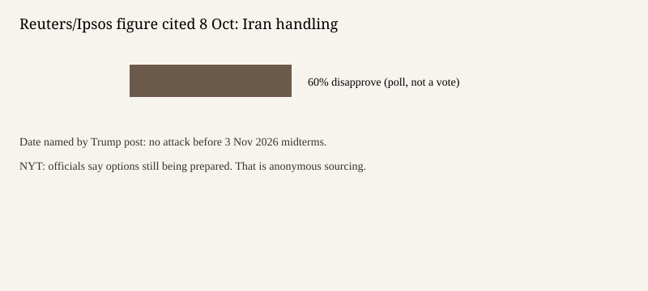

Washington · war · 9 October 2026
Trump wrote that the United States will not attack Iran before the 3 November election; officials told the Times that strike options are still being prepared

What is agreed across desks
On Thursday 8 October 2026 President Donald Trump wrote on Truth Social that the United States will not attack Iran before the midterm elections on 3 November. Reuters quoted the post: “We are having productive discussions with the Islamic Republic of Iran. We will not be attacking Iran at any time prior to the midterm elections to be held in the United States on November 3rd.” The New York Times reported the same post. Associated Press briefs on Thursday and Friday carried the same pledge, and added that Trump had also hinted an endgame could come in the days before or after the election and that he remained open to resuming full-scale operations.
Those are statements by the president. They are checkable as words he published. They are not an order to forces, a ceasefire text, or a confirmation from Tehran that talks are under way. Reuters described the war as having begun in February, when the United States and Israel launched strikes, and as six months old. That dating is the wire’s frame. This page does not re-litigate the February start.
What is only a quote or an anonymous account
The phrase “productive discussions” is Trump’s description. Reuters did not publish a joint communiqué. The Times reported that American officials said the military is preparing options to restart major combat operations, including plans, developed on Trump’s orders, to strike drone and missile sites, energy facilities, and other military targets, and that three aircraft carriers will soon be in the region. Those sentences rest on officials who were not named. They can be true and still be incomplete. They do not contradict a decision not to strike before 3 November. Preparing options is what staffs do while a decision is withheld.
Reuters cited a Reuters/Ipsos poll in which about 60 percent of Americans, including one in four Republicans, disapproved of Trump’s handling of Iran. A poll is a measurement of respondents, not of the battlefield. The same story said the conflict has pushed gasoline prices higher while voters name the cost of living as the top concern. The price claim is attributed to the war’s effect. It is not a table of pump prices in the copy used here.
Mechanism a reader needs
A presidential social-media post can direct policy and can be reversed by a later post. It does not amend the Authorization for Use of Military Force or a statute. Forces already in the region do not sail home because a sentence said there will be no attack before a date. The useful distinction is between a stated hold on renewed major strikes and the continued presence of ships and plans. The Times’ account of three carriers is consistent with earlier October reporting in this dossier about a third carrier and about 9,000 troops. Consistency is not confirmation. Carrier locations are knowable from Navy releases; those releases were not the source of Thursday’s sentence.
Midterm elections on 3 November are a domestic calendar. Linking a strike hold to that date is a political fact about the statement, not a legal requirement. Readers can note the date without treating the war as an electoral tactic or as something other than a war. Both descriptions go beyond the text.
What this story is not
It is not a report that the war is over. It is not a report that talks have produced a text. It is not a casualty count from February to October. The photograph is the White House exterior, the office associated with the post, not a damaged building in Tehran and not a rally. The chart records only the poll figure Reuters cited and the date in the post.

Source articles and scores
| Outlet | Headline | T | N | C |
|---|---|---|---|---|
| Reuters | Trump says US will not attack Iran before midterm elections in November | 93 | 0 | 86 |
| New York Times | Trump Says U.S. Will Not Strike Iran Again Before Midterms as Military Draws Up New Plans | 91 | -4 | 88 |
| Associated Press | Trump says US will not resume military strikes on Iran before the Nov. 3 midterm elections | 88 | 0 | 84 |